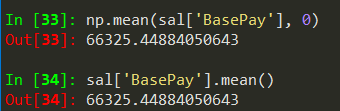
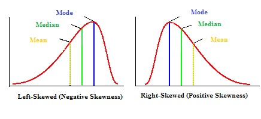

#seaborn scatterplot - size of markers - full scatterplot
plt.figure(figsize = (10,6))
markers = {"10x10": "o", "8x8": "o", "6x6":'o', "4x4":'o', "3x3":'o', "2x2":'o', "1x1":'o'}
sns.scatterplot('time', 'avg_corr', style = 'grid_size', s = 100, hue = 'grid_size', data = dat)
plt.grid(alpha = 0.5)
#check if a dataframe is empty
df.empty
#to count unique values of a dataframe column
dat['bestLongTerm'].value_counts()
#editing when using ipyhton
%edit
%edit -p - this opens last editing session
#to plot using subplots
# #define a plot object that can be manipulated
fig, ax = plt.subplots(6, 1, figsize=(16, 10))
## to add vertical space between subplots
fig.tight_layout(pad = 0.8)
## add figure to the subplot - here on the first row
ax[0].plot(obsSurge['date'], obsSurge['surge'], 'o', color = "blue", label = "observation", lw = 4)
#ipython example
fig, ax = plt.subplots(2, 1, figsize=(16, 10))
fig.tight_layout(pad = 0.8)
ax[0].plot(datRmse['year'], datRmse['rmse'], color = "blue", lw = 2)
ax[1].plot(scores['row_id'], scores['changepoint_score'], color = "red", lw = 2)
#to make basemap work
https://stackoverflow.com/questions/34979424/importing-mpl-toolkits-basemap-on-windows
-download basemap and matplotlib .whl files corresponding to the python version being used
-used pip install whlfile in the terminal
-should be good to go from there
#to manually add markers in a scatter plot - seaborn
#define markers
markers = {"20CR": "X", "ERA-20C": "s", "ERA-Interim":'o', "MERRA":'^'}
sns.scatterplot(x = x, y = y, s =70, markers = markers, style = 'reanalysis',\
hue = 'reanalysis', data = dat)
#to call a function from bash
$ python -c "from validateReanalysis import getFiles; getFiles('twcr')"
#to plot horizontal bar plots - with orieint = 'h'
plt.figure()
sns.barplot(x = counts, y = labels, orient = 'h')
plt.xlim(reversed(plt.xlim()))
plt.gca().invert_xaxis()
#to make labels by taking the unique value of a dataframe column
#then plot them as a barplot
labels, counts = np.unique(dat['band'], return_counts = True)
plt.figure()
sns.barplot(x = labels, y = counts)
#to invert the x axis
plt.xlim(reversed(plt.xlim()))
#to sort a dataframe/csv by a date
dat.sort_values(by = 'date', inplace=True)
#to fit a distribution to a histogram by scaling it
nbins = 30
fig, ax = plt.subplots(1, 1, figsize=(6, 4))
ax.hist(survival, nbins)
ax.plot(days, dist_exp * len(survival) * smax / nbins,
'-r', lw=3)
ax.set_xlabel("Survival time (days)")
ax.set_ylabel("Number of patients")
#to do subplots - side by side
fig, (ax1, ax2) = plt.subplots(1, 2, figsize=(10, 4))
ax1.plot(sorted(survival)[::-1], 'o')
ax1.set_xlabel('Patient')
ax1.set_ylabel('Survival time (days)')
ax2.hist(survival, bins=15)
ax2.set_xlabel('Survival time (days)')
ax2.set_ylabel('Number of patients')
#keep data off plot edge
plt.margins(0.02)
#global rmse/correlation plotting script
import os
os.environ["PROJ_LIB"] = "C:\\Users\\WahlInstall\\Anaconda3\\Library\\share\\basemap";
from mpl_toolkits.basemap import Basemap
fig=plt.figure(figsize=(12, 8) )
m=Basemap(projection='mill', lat_ts=10, llcrnrlon=-180, \
urcrnrlon=180,llcrnrlat=-80,urcrnrlat=80, \
resolution='c')
x,y = m(dat['lon'].tolist(), dat['lat'].tolist())
m.drawcoastlines()
plt.scatter(x, y, 70, marker = 'o', edgecolors = 'black', c = dat['rmse'], cmap = 'hot_r')
cbar = m.colorbar(location = 'bottom')
plt.clim(0, 1)
#to remove any column that has NaNs
df1 = df[df.isna().any(axis=1)]
#to list all installed modules
pip freeze
#to sort a dataframe by values of a column using sort_values
corr.sort_values(by='sst', ascending=False).head(10)s
#to read a string date from csv and change to datetime
datetime.strptime(dat['date'][0], '%Y-%m-%d %H:%M:%S')
#to make basemap work on RCP2 computer
import os
os.environ["PROJ_LIB"] = "C:\\Users\\WahlInstall\\Anaconda3\\Library\\share\\basemap";
from mpl_toolkits.basemap import Basemap
#matplotlib - simple plot - markers - marker colors
plt.plot(x, y, marker = 'o', markersize = 12, mfc = 'black', color = 'red', lw = 4)
plt.grid()
plt.xlabel('Date')
plt.ylabel('Stock Price ($)')
plt.rcParams.update({'font.size':25})
#melting a dataframe with just a few variables - used to plot boxplots
mdf = pd.melt(mdl_rs, id_vars=['model'], value_vars=['corr', 'rmse', 'nse'])
#matplotlib color names and types
https://matplotlib.org/examples/color/named_colors.html
#to add a vertical line in a figure
axvline(x=0, ymin=0, ymax=1, **kwargs)
plt.axvline(2.8, 0,0.17)
ymin and ymax should be always between 0 and 1
#to wrap a variable in a quotation mark
You can try repr
Code:
word = "This is a random text" print repr(word)
Output:
'This is a random text'
#To run several python scripts all at once
import subprocess
for ii in os.listdir():
subprocess.Popen(["python.exe", os.path.abspath(ii)])
#lambda function

#to drop a row
aa.drop(0, axis = 0)
#doing subplots
pyplot.figure()
group = ['u10', 'v10', 'slp', 'surge']
i = 1
for ii in group:
pyplot.subplot(len(group), 1, i)
pyplot.plot(dat[ii])
pyplot.title(ii, loc = 'best')
i +=1
pyplot.show()
#Decorators
#extend the functionality of our function - without modifying the function itself
#When plotting a histogram with count involved
patient_dets.set_index('PatientAge')['PatientAgecounts'].plot.bar()
#Find location of nan value
y_check.loc[pd.isna(y_check["surge"]), :].index
#using formatted string literals
f'My name is {name} and I am {age} years old'
'My name is Michael and I am 28 years old'
#To initiate a lookup error
def reverse_lookup(d, v):
for k in d:
if d[k] == v:
return k
raise LookupError('value does not appear in the dictionary')
#To index a list
v_ind = d_values.index('love') - returns the index of the list that is 'love
#list slicing indexing
['barcelona',
'castries',
'delft',
'dresden',
'gottingen',
'horsholm',
'orlando',
'philly']
cities[3::2]
['dresden', 'horsholm', 'philly']
#to copy a list and edit but keep original
>>> t = [3, 1, 2]
>>> t2 = t[:]
>>> t2.sort()
>>> t
[3, 1, 2]
>>> t2
[1, 2, 3]
#how to concatenate a list of words with different delimiters

#to separate a text into words
'You''re decision was impeccable!'.split('delimiter') - delimiter is governing which
characters to use as word boundaries - could be '-' or '' or anything
#change strings to list
list('innocouous')
['i', 'n', 'n', 'o', 'c', 'o', 'u', 'o', 'u', 's']
#find index of a list element - pop - del - remove
a.index(23) - returnds the index of 23 in the list
you can pop stuff after getting its index
a.pop(a.index(23))
pop and del do the same job except that del doesn't return the removed element
del a[1:5] - deletes all elements starting from the second element to the element with index 4
a.remove(7) - removes the element 7 from the list - this method common for when one doesn't know the index of the element
#difference between append and extend


#To add variable to plt.title
1. plt.title('f model: T= {}'.format(t)) or
2. plt.title('f model: T= %d' % (t)) # c style print
#to reshape a panda series
y_pop.values.reshape(12,14) -> this convers the original series to a 12 row, 14 column array
#always make sure to have your function return something - no matter what!
#To make arbitrary diagonal matrix
np.diag(aa.A[:,0])
#short, concise, efficient for loop with unique
[[i, len(y[y == i])] for i in y.unique()]
#To time execution of a python program
import time
start_time = time.time()
main()
print("--- %s seconds ---" % (time.time() - start_time))
#Standalone plotting example
plt.figure()
plt.hist(norm_laplace(10000))
plt.style.use('classic')
plt.xlabel('Y', fontsize=20)
plt.ylabel('Frequency', fontsize=20)
plt.xticks(fontsize=20, rotation=0)
plt.yticks(fontsize=20, rotation=0)
#To plot in matplotlib using classic style
plt.style.use('classic')
plt.xticks(fontsize=14, rotation=90) #to increase font size of xtick ytick
#To find the number of rows and columns
dat.shape[0] == rows and [1] for columns
#succinct way of writing for loop
folds = [int(x) for x in folds] - changes every element of folds to int and save it as folds
#To subset a chosen number of columns in a dataframe
X = dat.loc[:, 0:9] -> this will select all rows from 0 - 9 columns
#If the cherry-picked slice of dataframe has an index starting from non-zero number
for ii in dat_test.index:
#To get the names of the columns for maximum values in a dataframe - use df.idxmax(axis =1)

#To drop a specific portion of a dataframe that might involve indexing
mb_gt.drop((mb_gt[mb_gt['rmse_gt'] > 0.5].index), inplace=True)
first find out the index of the dataframe portion you are interested in and then put that stamtemetn tat describes the index --> into the df.drop() inside those parentheses
#np.random.seed(100)
#get 5 random numbers
#p.random.randint(0,150, 5)
#To choose only a specific column/s in pandas
mab[[2,3]] -> remember the double square brackets
sns.boxplot(data = mab[[2, 3]])
mab.loc[:][:] -> this selects all the columns and rows
mab[(mab[0] == 0) & (mab[1] == 0)] -> gives the rows and columns of mab that are 0
#To access a specific column in a list or dataframe
mab[:,2] -> this will select the column with index = 2 and all the rows associated with it.
#To find duplicated elements of a dataframe
indb[indb.duplicated(keep='first')] -> this will find out the repeated rows in the indb dataframe and will place True in all repeated rows except for the first occurence.
#To reset the indx back to original
df.reset_index()
#To do facet gridding without seaborn
messages.hist(column = 'length', by='label', bins=60, figsize=(12,4))
#To transpose an array
aa =test_img[0].reshape(1,-1)
This reshapes the vector to one row and columns of length equivalent to rows
#Web Scrapping
Use beautiful soup
#Use item() inorder to pick the object of a dataframe without an index
dbk['hw_key'][s] = hw['dbKey'].item()
#To do scatter plot with seaborn
sns.lmplot(x='Room.Board', y='Grad.Rate', \
data=dat,hue= 'Private', fit_reg = False, \
palette = 'coolwarm', size=6, aspect=1)
#To remove xlabel from plot
plt.
#When having problem plotting sns.pairplot - make the diag_kind = 'hist'
#To have a nice table format
print(tabulate(ad_data.head()))
print(tabulate(ad_data.head(), headers=ad_data.columns))
#To add the 1:1 line in scatter plotfig
from numpy.polynomial.polynomial import polyfit
b,m = polyfit(y_test, predictions, 1)
plt.plot(y_test, b+m*y_test, '-', color='red')
#To read .MAT files in python
from scipy.io import loadmat
mat = loadmat('oobe') - the variable mat is a dictionaty with the variables and values contained in the MAT-File
error = mat['oobe'] - extract a variable from the mat file
#To plot arrays in python
import matplotlib.pyplot as plt
plt.plot(error)
plt.boxplot(cux_err) - to plot arrays to a boxplot
Organize the columns together and call - sns.boxplot(data = ma_b) - in order to make a group boxplot together
or
sns.boxplot(data = ma_better_corr[['corra', 'corrb']]) - you can just index the columns you want to include in the plot
#To plot boxplots with different variables at the same time

plt.figure(figsize = (10,7));sns.boxplot(x='Pclass', y = 'Age', data = train)
#Iteratively rename folders
for file in os.listdir():
if file.endswith('_H'):
os.rename(file, file[:-2])
#check if a file exists in a directory
os.path.isfile('./stage2.csv')
#toggle betweeen Editor and console
Ctrl + Shift + E -> Editor
Ctrl + Shift + I -> Ipython (console)
Moving averages
plt.figure(); close.loc['2008-01-01':'2008-12-31']['BAC'].plot.line()
close.loc['2008-01-01':'2008-12-31']['BAC'].rolling(30, center = True).mean().plot(color= 'green', label = '30 day Avg')
plt.legend() - add legend
plt.close('all') - close all plot - matlab's equivalent of close all
#Make line break or line continuation - when you have too much to write
if a == True and \
b == False
use the backslash and press enter
Properly replace values in a dataframe with inplace
data['sex'].replace(0, 'Female',inplace=True)
data['sex'].replace(1, 'Male',inplace=True)
help(sns.lineplot) - get the documentation of a package on python
Filter a dataframe by a specific date from the index - indexing a dataframe using the index
returns.loc['2015-01-01' : '2015-12-31'].head()

returns.std() same as np.std(returns)
In order to calculate the index for minimum/maximum value of the dataframe ->returns.idxmax() - returns.idxmin()

for tick in tickers:
returns[tick+' Return'] = bank_stocks[tick]['Close'].pct_change()
returns.head()
the + plus sign concatenates the Return to the name carried by the tick variable
df.pct_change(1) - calculates the percent change between the current and prior elment - 1 is steps to take to compute the percent change
df.xs('Close', level =1, axis) - access a specific column or crossection of a data

In order to pick up column names from a multi-level dataframe
df.columns.levels[0]
pd.set_option('display.max_columns', None) -> set globally printing options ... in order to view all content of the columns
pd.set_option('display.max_rows', None)
import os
os.listdir() - list all directories
os.chdir(file) - change to the directory of file
plt.tight_layout() - to adjust plot according to the window size I choose by minimizing or maximizing window size
df['Data'] = df['timeStamp'].apply(lambda x: x.date()) - in order to extract the date format from a timestamp with datetime format
bymonth['e'].plot() - will basically make an easy lineplot from the dataframe
df['timeStamp'] = pd.to_datetime(df['timeStamp']) - in order to change str to timestamp
time = df['timeStamp'].iloc[0] - time.hour - in order to grab hour or minute from the timestamp
time.minute; time.day; time.week; time.dayofweek
#%% - in order to partition a new section
Ctrl + Tab -> browse script tabs
CHeck version of installed library - pd.__version__; np.__version__
from plotly import __version__
print(__version__)
Change linewidth and linestyle of a plot in pandas - df3['d'].plot.kde(lw =16, ls = '--')
Plot box plots for many variables at the same time - df3[['a', 'b']].plot.box()
To close all open edplots - plt.close()
To see all available styles - print(plt.style.available)
To apply a specific style - plt.style.use('ggplot')
Use Ctrl + Enter - go to the next line without executing the command
Plot outside Spyder IDE - %matplotlib qt5
Plot inside Spyder IDE - %matplotlib inline
apparently 'list' objects have no attribute ;unique' 'nunique' or 'value_counts' -> instead of using list(map(lambda ... use the apply() if you want to count unique values..
df['zip'].value_counts().head()
apparently 'list' objects have no attribute ;unique' 'nunique' or 'value_counts' -> instead of using list(map(lambda ... use the apply() if you want to count unique values..

both numpy and pandas can be to find sum/mean, but syntax is di

del data['unnamed'] → delete a column in a dataframe
len(data.columns) → find length of a column in a d
Some shortcuts
- A tuple is a sequence of immutable Python objects. Tuples are sequences, just like lists. The differences between tuples and lists are, the tuples cannot be changed unlike lists and tuples use parentheses, whereas lists use square brackets. Creating a tuple is as simple as putting different comma-separated values.
Alt + p --> previous command
Alt + n --> next command
cd .. -> to back up one folder in cmd
cls -> equivalent to cls in matlab
Use shift+enter to run the code on jupyter
Use Alt+Enter to insert an empty cell for writing code
Kernel -> Restart Kernel -> use if it gets stuck
when I change to Markdown - > it makes it easy for me to make notes for my self
2**4 -> 2^4 as in Matlab
4%2 = 0 -> modulus, what remains after dividing it
#writie comments after hashtag
'My number is {} and my name is {}'.format(num, name)
print('My number is {} and my name is {}'.format(num, name))
print('My number is {one} and my name is {two}'.format(one = num, two = name)) --> avoids writing stuff repeatedly, and things don't have to be in order.
Indexing at python starts from 0
s[0] -> returns the first element
s[0:4] -> grab everything after the first element
s[:3] -> grab everything up to the fourth element but not including the fourth element (slicing notation)
mylist_append('d') --> will append this element to the original my_list
my_list[0] = 'NEW' -> to replace an element in the list

- You can't mutate an item inside a tuple such as t = (1,2,3)
- set([1,1,1,1,2,2,2,2,3,3,3]) --> is python's version of unique, I can also just write {1,1,1,1,2,2,2,3,3,3} and I will get the unique version of that
- 1!=2 same as 1~=2 in MATLAB
Conditional statement
if 1 < 2:
print('yep!')
if 1 == 2:
print('First')
elif 3== 3:
print('Middle')
else:
print('last')
>>> seq = [1,2,3,4,5]
For Loop
>>> for item in seq:
print(item)
1
2
3
4
5
>>>
While Loop

range--> generator of numerical values


 by default it starts from 0
by default it starts from 0list(range(0,5)) leads to [0, 1, 2, 3, 4]
 or
or 
List comprehension
for num in x:
out.append(num**2)
print(out)
The above can be done easily as follows
out = [num**2 for num in x]

Functions


 → to use default name, use parenthesis to execute the function
→ to use default name, use parenthesis to execute the function → to return a value
→ to return a value name = 'Default Name' will use 'Default Name' if the user didn't provide any name
+ sign concatenates the name to the 'Hello'
 -> += itertively adds
-> += itertively addsdef square(num):
return num**2
output = square(2)
output is stored and is 4: this is different than just printing it and not storing it
 --> shift + tab to access the docstring
--> shift + tab to access the docstringlambda function --> rewriting the entire function into a single line, avoid writing and defining the function.
seq = [1,2,3,4,5]
map(times2, seq) --> maps the function using the sequence
t= lambda var: var*2 --> a lambda expression
t(6) gives 12


filter()
filter(lambda num: num%2 == 0, seq) --> returns the values of
 seq = [1,2,3,4,5]
seq = [1,2,3,4,5]s = 'hellow my nam is Michael'
s.lower() --> lowers all the words
s.split() --> splits the words with space for text analysis
tweet.split('#')[1] --> provides the first separated component
>>> d = {'k1': 1, 'k2':2}
>>> d.keys()
['k2', 'k1']
>>> d.items()
[('k2', 2), ('k1', 1)]
>>> d.values()
[2, 1]
>>> lst = [1,2,3]
>>> lst.pop() → get rid of the last item, this can also be removed and assigned to another variable
3
>>> lst.append('new')
>>> lst
[2, 3, 'new']
'x' in [1,2,3] gives False

Tuple unpacking
>>> x = [(1,2), (3,4), (5,6)]
>>> x[0]
(1, 2)
>>> x[0][1]
for a,b in x:
print(a)
print(b)
2
4
6
02/12/2019 → 06/24/2019
Numpy - Data analysis library
- A linear algebra library for python
Numpy arrays --> can be vectors or matrices
np.array(my_list)
Out[61]: array([1, 2, 3]) → to cast a one dimensional array

works as range function
np.arange(0,11,2) --> stepsize
array([ 0, 2, 4, 6, 8, 10])
>>> np.zeros((5,5)) --> to generate arrays of all zeros, paass a tupleof the dimmensions, rows and columns

>>> np.ones(4) --> ones
linspace → to find n number of evenly spaced points between the first and the second entries
>>> np.linspace(0,5,10)
array([0. , 0.55555556, 1.11111111, 1.66666667, 2.22222222,
2.77777778, 3.33333333, 3.88888889, 4.44444444, 5. ])
gives 10 evenly spaced points
>>> np.eye(4) → make an identity matrix
array([[1., 0., 0., 0.],
[0., 1., 0., 0.],
[0., 0., 1., 0.],
[0., 0., 0., 1.]]) --> to generate an identity matrix
>>> np.random.rand(5) --> random sample from uniform distribution over 0 to 1
array([0.17781395, 0.07390248, 0.70562896, 0.5541006 , 0.59563219])
>>> np.random.rand(5,5) → from a gaussian distribution
array([[0.71512117, 0.71464208, 0.74653605, 0.81628386, 0.07994516],
[0.89654843, 0.56124478, 0.21341729, 0.05545339, 0.11193335],
[0.43238627, 0.34597614, 0.38236483, 0.44294457, 0.86506 ],
[0.78348917, 0.15778421, 0.14343941, 0.97025989, 0.1345768 ],
[0.7739381 , 0.22939538, 0.10383759, 0.1762848 , 0.94906546]]) (don't pass a tuple)
>>> np.random.randn(2)
array([-0.55274765, 1.12789083]) --> to see two numbers
>>> np.random.randint(1,100) → randomize with integers, lowest inclusive and highest exclusive
6 --> lowest inclusive and highest exclusive
>>> np.random.randint(1,100,10) → how many random integers do you want?
array([90, 49, 1, 95, 61, 32, 83, 81, 69, 85])
>>> arr.reshape(5,5) → to reshape the vector/matrix to another

>>> ranarr.max() --> find max value of the array
>>> ranarr.argmax() → index location of the max value # same applies for ranarr.argmin()
>>> arr.shape → notice that there is no parenthesis
(25,) --> one directional vector
>>> arr.shape
(5, 5) --> report the shape
>>> arr.dtype → show data type of the object
dtype('int32') --> show the data type
 to spare myself the trouble of typing a lot
to spare myself the trouble of typing a lotIndexing
arr = array([ 0, 1, 2, 3, 4, 5, 6, 7, 8, 9, 10])
arr[1:5] --> array([1, 2, 3, 4])
arr[:6] --> array([0, 1, 2, 3, 4, 5]) same as arr[0:6]
arr[7:] --> array([ 7, 8, 9, 10])
Numpy arrays --> have ability to broadcast???
- arr[0:5] = 100 --> array([100, 100, 100, 100, 100, 5, 6, 7, 8, 9, 10])
- Meaning change in a slice of data is broadcast to the original array
- slice_of_arr = arr[0:6]
- slice_of_arr[:] = 99
- arr = array([99, 99, 99, 99, 99, 99, 6, 7, 8, 9, 10])
- This is done to avoid memory issues with very large arrays
- arr_copy = arr.copy() --> to bypass the above broadcasting stuff
arr_2d = np.array([[5,10,15], [20,25,30], [35,40,45]])
- remember to use the bracket (outer) to represent a 2D matrix

arr_2d[2][1] --> is a double bracket indexing method
arr_2d[2,1] --> single bracket with comma notation of indexing
arr_2d[:2,1:] --> grab everything with row < 3 and column greater than or equal to 2
arr_2d[:,1] --> show me all rows on the second column
 --> you can call the last element by -1 and the one before it as -2 and so on
--> you can call the last element by -1 and the one before it as -2 and so on
Conditional Selection
arr = np.arange(0,11)
arr > 5 -->
array([False, False, False, False, False, False, True, True, True,
True, True])
arr[bool_arr] --> array([ 6, 7, 8, 9, 10]) select the true
arr[arr>5]
array([[ 0, 1, 2, 3, 4, 5, 6, 7, 8, 9],
[10, 11, 12, 13, 14, 15, 16, 17, 18, 19],
[20, 21, 22, 23, 24, 25, 26, 27, 28, 29],
[30, 31, 32, 33, 34, 35, 36, 37, 38, 39],
[40, 41, 42, 43, 44, 45, 46, 47, 48, 49]])
arr_2d[1:3,] --> grabs the second and third rows of the array
arr_2d[1:3,3:5] --> array([[13, 14],[23, 24]])
- notice that the 1 and 3 are inclusive but 3 and 5 are not
- in slice notation
Array operations
arr**2arr-2d = np.arange()
Universal array functions
np.sqrt(arr) --> square root each member of the array
np.exp(arr) --> exponent each member of the array
max(arr) == arr.max() == np.max(arr)
np.sin(arr)
Here is a list of all functions
np.sum(mat) --> to sum all matrix elements in mat
np.sum(mat, 1) --> to sum all matrix elements along row
np.sum(mat,0) --> to sum along columns

Introduction to Pandas (06/25/2019)

- Built on Numpy
- Python's version of excel/R
- Data visualization
Installed Pandas (pip install pandas)
Series
- A series can access labels
- You can specify also
- pd.Series(data = my_data, index = labels) -->a 10b 20c 30dtype: int64
How to create a series


Same works for a numpy array, python list or dictionary
- pd.Series(my_data,labels) --> same result
- pd.Series(d) --> for a dictionary it takes the keys of the dict and set it as index, value == corresponding value
- Panda can hold a variety of things

Pandas and Numpys always convert stuff to float to retain all the information possible
Dataframes
 → just to get the same results all the time
→ just to get the same results all the timeA bunch of series that share the same index
from numpy.random import randn --> to import randn
np.random.seed(101) --> to make sure we get the same random numbers
df = pd.DataFrame(randn(5,4), ['A', 'B','C','D','E'], ['W','X','Y','Z']) -->
W | X | Y | Z | |
A | 2.706850 | 0.628133 | 0.907969 | 0.503826 |
B | 0.651118 | -0.319318 | -0.848077 | 0.605965 |
C | -2.018168 | 0.740122 | 0.528813 | -0.589001 |
D | 0.188695 | -0.758872 | -0.933237 | 0.955057 |
E | 0.190794 | 1.978757 | 2.605967 | 0.683509 |
sal.info() -> gives summarized information about the dataframe

df[df>0] --> gives a NaN for those that dont qualify
result = df[boolser] --> creates a dataframe from the boolser
Selecting columns
df['W'] -->
A 2.706850 B 0.651118 C -2.018168 D 0.188695 E 0.190794 Name: W, dtype: float64
 → select two or more columns
→ select two or more columnsdf[df['W']>0]['X'] --> gives back the X column of the newly subset dataframe
df[df['W']>0][['X', 'Y']] --> in order to subset multiple columns (one-liner and it does not take space)
df[(df['W']>0) & (df['Y']>1)]
Always use a bracket notation to request a column
df[['W', 'Z']] -->
W | Z | |
A | 2.706850 | 0.503826 |
B | 0.651118 | 0.605965 |
C | -2.018168 | -0.589001 |
D | 0.188695 | 0.955057 |
E | 0.190794 | 0.683509 |
df['new'] = df['W'] + df['Y'] -->
W | X | Y | Z | new | |
A | 2.706850 | 0.628133 | 0.907969 | 0.503826 | 3.614819 |
B | 0.651118 | -0.319318 | -0.848077 | 0.605965 | -0.196959 |
C | -2.018168 | 0.740122 | 0.528813 | -0.589001 | -1.489355 |
D | 0.188695 | -0.758872 | -0.933237 | 0.955057 | -0.744542 |
E | 0.190794 | 1.978757 | 2.605967 | 0.683509 | 2.796762 |
df.drop('new', axis = 1) --> remember to provide the axis , when axis = 0, which is the default, removes the rows
ma_b.drop(zeros, axis =0, inplace = True) - removes all rows that have zeros in them, zeros doesn't mean syntaxically making the rows zero, its just a name

but this does not remove the 'new' axis
Use the inplace argument to apply the changes in the original dataframe -->: this helps not to accidentally lose information

df.drop('E', axis = 0) --> same thing but to remove rows
rows = 0 for axis, columns are 1 axis
In pandas rows are referred to as the 0 axis and columns are referred to as the 1 axis
#drop any missing value in the dataframe
train.dropna(inplace=True)
Selecting rows
df.loc['A'] --> returns a series
W 2.706850
X 0.628133
Y 0.907969
Z 0.503826
Name: A, dtype: float64
Not only are the columns a series, but the rows too
df.iloc[0] --> returns the row if we want to index using numerical based index

df.loc['B','Y'] -->
-0.848076983403631
Subsets of a dataframe
df.loc[['A','B'], ['W','Y']] --> returns a subset of rows and columns

Conditional Selection
booldf = df>0
df[booldf]


or simply use df[df]>0
df[df['W'] >0]
df[df['W'] >0]['X'] --> to call X from the result
df[df['W'] >0][['X', 'Y']]

Reseting index

df.reset_index() --> to reset index --> old index becomes a column
df.set_index('States') --> replaces the available index with this new

'CA NY WY OR CO'.split() --> splits based on empty space
04/02/2019 --> 06/26/2019

zip can be used to make a list of tuples


df.dropna() -> drops any row with missing or nan values
df.dropna(axis = 1) --> removes nans from columns

df.dropna(thresh = 2) --> thresholds for non - nans in other words, keep the row if it has at least 2 non-nan values

df['A'].fillna(value = df['A'].mean(), inplace = True) --> to replace nan values

byComp = df.groupby('Company') --> to group by company
byComp.mean() --> gives back the mean of non string values

byComp.std()
byComp.sum().loc['FB'] --> to get the sum of the FB company
df.groupby('Company').sum().loc['FB'] --> to do it all in one go


df.groupby('Company').count() --> to count the numbers associated with each company

df.groupby('Company').max() --> gives value for the numerical unique rows associated with the rows under the company group
df.groupby('Company').describe() --> get more statistics of the table

df.groupby('Company').describe().transpose() -> to transpose the describe table
df.transpose() == df.T
Merging, Joining, and Concatenating
pd.concat([df1, df2,df3)]
pd.concat([df1, df2, df3], 1) -> concatenate along columns
pd.merge(left, right, how = 'inner', on = 'key')
pd.merge(left, right, on=['key1', 'key2']) -> merge with more than one key
pd.merge(left, right, how = 'right', on=['key1', 'key2']) -> outer is to merge by using all dfs and there might be nans, inner filters the overlapping df, left is based on the values of the left df and right is based on the value of the right df
Joining == merging but the keys are based on index ..


left.join(right) -> to join the right df with the left
Operations

nunique -> to get the number of unique values in a df

to count how much of each value is available

Conditional selection

how to broadcast a function or apply custom function

Use apply with lambda functions

deleting a column
df.drop('col1', 1, inplace = True)
Sorting columns


df.isnull() -> find null values
df.head(n) -> dipsplay the first n rows
Creating pivot tables


Data Input and Output
pd.read_csv('example.csv') -> read from csv

use index = False in order to avoid the unnamed column/index
pd.read_excel, access different sheets

df.to_excel('Excel_Sample2.xlsx', sheet_name ='NewSheet') -> to write to a specific sheet in excel
Matplotlib
import matplotlib.pyplot as plt
%matplotlib inline -> to show the plot on the IDE
Functional method

plt.plot(x, y, 'r') # 'r' is the color red
plt.xlabel('X Axis Title Here')
plt.ylabel('Y Axis Title Here')
plt.title('String Title Here')
plt.show()
It is also possible to write it in a single line just like matlab


Object Oriented Method
define values for axes (left, bottom, width, height)


finally just call the name, fig
fig = plt.figure(); axes1 = fig.add_axes([0.1, 0.1, 0.8, 0.8]); axes2 = fig.add_axes([0.2,0.7, 0.25, 0.15]) -> to plot a figure and add another axis within the existing axes
axes1.plot(x,y); axes2.plot(y,x) -> to plot in the newly created axes


Histograms
features = ['Total day minutes', 'Total intl calls']
df[features].hist(figsize = (10,4));

Subplots
fig, plt.subplots(nrows=1, ncols=2)
fig.tight_layout() -> solve overlapping plots
fig.savefig("filename.png", dpi = 600) -> save figure
How to add legend to the figure

ax.legend(loc = 0) -> gives the best location
Also for more customized location of legend, user defined

TO add color to the plot

Transparency, alpha

lw = linewidth short version
fig = plt.figure(); ax = fig.add_axes([0,0,1,1]); ax.plot(x,y, color = '#FF8C00', lw =3, alpha= 0.5);
linestyle, -- -. :

ls = linestyle short form
To mark points of values

Markersize
fig = plt.figure(); ax = fig.add_axes([0,0,1,1]); ax.plot(x,y, color = '#FF8C00', lw =1, ls= ':', marker='o', markersize=10);
Markeredge size color

Xlim and ylim
fig = plt.figure(); ax = fig.add_axes([0,0,1,1]); ax.plot(x,y, color = '#FF8C00', lw =3, ls= ':'); ax.set_xlim([0,1]); ax.set_ylim([0,2])
To add figure size for subplots
fig, axes = plt.subplots(nrows=1, ncols=2, figsize=(12,4))
Seaborn - statsistical plotting library
distplot - The distplot shows the distribution of a univariate set of observations.

sns.distplot(tips['total_bill']) -> distribution plot
sns.distplot(tips['total_bill'], kde = False) -> just histogram
sns.distplot(tips['total_bill'], hist= False) -> to remove the histogram and just kde
sns.distplot(tips['total_bill'], kde = False, bins=30) -> adjust number of bins
sns.jointplot(x = 'total_bill', y='tip', data= tips) -> scatter plot with histograms on the side
plt.figure(); sns.distplot(train['Age'].dropna(), kde = False, bins=30) -> to view only non nas in a dataframe

sns.jointplot(x = 'total_bill', y='tip', data= tips, kind='hex') -> distribtuion with hexagons
sns.jointplot(x = 'total_bill', y='tip', data= tips, kind='reg') -> regression line
sns.jointplot(x = 'total_bill', y='tip', data= tips, kind='kde')

sns.pairplot -
sns.pairplot(tips)

sns.pairplot(tips, hue='sex') -> to color categorical values of a column

sns.rugplot(tips['total_bill'])
Kernel desnity estimation plots - kde plots
sns.kdeplot(tips['total_bill']) -> will do just the kde plots without the bins

sns.barplot(x='sex',y='total_bill', data = tips);
sns.countplot(x='sex', data =tips) -> counts
sns.boxplot(x='day', y='total_bill', data = tips)
sns.boxplot(x='day', y='total_bill', data = tips, hue='smoker') -> add adititional comparison
sns.violinplot(x='day', y='total_bill', data = tips) -> violin plot, a little more info than boxplots
sns.violinplot(x='day', y='total_bill', data = tips, hue='sex', split=True)
sns.stripplot(x='day', y='total_bill', data=tips, jitter = True)
sns.stripplot(x='day', y='total_bill', data=tips, jitter = True, hue ='sex') -> additional info
Heatmaps

sns.heatmap(tips.corr(), annot = True) -> to annotate corr values
sns.heatmap(tips.corr(), annot = True, cmap = 'coolwarm')
using pivot_table
plt.figure();sns.heatmap(train.isnull(), yticklabels=False,cbar =False,cmap = 'viridis') - not to use y ticks and to avoid colorbar in heatmap


cmap = magma

Seaborn linewidth and linecolor

clustermapping

plt.figure(figsize=(24,12))
sns.heatmap(daymonpvt, cmap = 'magma_r') -> use underscore followed by r to reverse the colorbar in seabirn heatmap
sns.clustermap(fp, cmap='coolwarm',standard_scale=1) -> to standard the scale for legend
g = sns.PairGrid(iris); g.map(plt.scatter) (apparently these two commands need to be written back to back in order for them to work)

g = sns.PairGrid(iris); g.map_diag(sns.distplot); g.map_upper(plt.scatter); g.map_lower(sns.kdeplot)

Facet Grid
g = sns.FacetGrid(tips, col='time',row='smoker'); g.map(sns.distplot,'total_bill');
g = sns.FacetGrid(tips, col='time',row='smoker'); g.map(plt.scatter,'total_bill','tip');

both numpy and pandas can be to find sum/mean, but syntax is di
del data['unnamed'] → delete a column in a dataframe
len(data.columns) → find length of a column in a d
Some shortcuts
- A tuple is a sequence of immutable Python objects. Tuples are sequences, just like lists. The differences between tuples and lists are, the tuples cannot be changed unlike lists and tuples use parentheses, whereas lists use square brackets. Creating a tuple is as simple as putting different comma-separated values.
Alt + p --> previous command
Alt + n --> next command
cd .. -> to back up one folder in cmd
cls -> equivalent to cls in matlab
Use shift+enter to run the code on jupyter
Use Alt+Enter to insert an empty cell for writing code
Kernel -> Restart Kernel -> use if it gets stuck
when I change to Markdown - > it makes it easy for me to make notes for my self
2**4 -> 2^4 as in Matlab
4%2 = 0 -> modulus, what remains after dividing it
#writie comments after hashtag
'My number is {} and my name is {}'.format(num, name)
print('My number is {} and my name is {}'.format(num, name))
print('My number is {one} and my name is {two}'.format(one = num, two = name)) --> avoids writing stuff repeatedly, and things don't have to be in order.
Indexing at python starts from 0
s[0] -> returns the first element
s[0:4] -> grab everything after the first element
s[:3] -> grab everything up to the fourth element but not including the fourth element (slicing notation)
mylist_append('d') --> will append this element to the original my_list
my_list[0] = 'NEW' -> to replace an element in the list
- You can't mutate an item inside a tuple such as t = (1,2,3)
- set([1,1,1,1,2,2,2,2,3,3,3]) --> is python's version of unique, I can also just write {1,1,1,1,2,2,2,3,3,3} and I will get the unique version of that
- 1!=2 same as 1~=2 in MATLAB
Conditional statement
if 1 < 2:
print('yep!')
if 1 == 2:
print('First')
elif 3== 3:
print('Middle')
else:
print('last')
>>> seq = [1,2,3,4,5]
>>> for item in seq:
print(item)
1
2
3
4
5
>>>
While Loop
range--> generator of numerical values
by default it starts from 0
list(range(0,5)) leads to [0, 1, 2, 3, 4]
or
List comprehension
for num in x:
out.append(num**2)
print(out)
The above can be done easily as follows
out = [num**2 for num in x]
Functions
→ to use default name, use parenthesis to execute the function
→ to return a value
name = 'Default Name' will use 'Default Name' if the user didn't provide any name
+ sign concatenates the name to the 'Hello'
-> += itertively adds
def square(num):
return num**2
output = square(2)
output is stored and is 4: this is different than just printing it and not storing it
--> shift + tab to access the docstring
lambda function --> rewriting the entire function into a single line, avoid writing and defining the function.
seq = [1,2,3,4,5]
map(times2, seq) --> maps the function using the sequence
t= lambda var: var*2 --> a lambda expression
t(6) gives 12
filter()
filter(lambda num: num%2 == 0, seq) --> returns the values of
seq = [1,2,3,4,5]
s = 'hellow my nam is Michael'
s.lower() --> lowers all the words
s.split() --> splits the words with space for text analysis
tweet.split('#')[1] --> provides the first separated component
>>> d = {'k1': 1, 'k2':2}
>>> d.keys()
['k2', 'k1']
>>> d.items()
[('k2', 2), ('k1', 1)]
>>> d.values()
[2, 1]
>>> lst = [1,2,3]
>>> lst.pop() → get rid of the last item, this can also be removed and assigned to another variable
3
>>> lst.append('new')
>>> lst
[2, 3, 'new']
'x' in [1,2,3] gives False
Tuple unpacking
>>> x = [(1,2), (3,4), (5,6)]
>>> x[0]
(1, 2)
>>> x[0][1]
for a,b in x:
print(a)
print(b)
2
4
6
02/12/2019 → 06/24/2019
Numpy - Data analysis library
- A linear algebra library for python
Numpy arrays --> can be vectors or matrices
np.array(my_list)
Out[61]: array([1, 2, 3]) → to cast a one dimensional array
works as range function
np.arange(0,11,2) --> stepsize
array([ 0, 2, 4, 6, 8, 10])
>>> np.zeros((5,5)) --> to generate arrays of all zeros, paass a tupleof the dimmensions, rows and columns
>>> np.ones(4) --> ones
linspace → to find n number of evenly spaced points between the first and the second entries
>>> np.linspace(0,5,10)
array([0. , 0.55555556, 1.11111111, 1.66666667, 2.22222222,
2.77777778, 3.33333333, 3.88888889, 4.44444444, 5. ])
gives 10 evenly spaced points
>>> np.eye(4) → make an identity matrix
array([[1., 0., 0., 0.],
[0., 1., 0., 0.],
[0., 0., 1., 0.],
[0., 0., 0., 1.]]) --> to generate an identity matrix
>>> np.random.rand(5) --> random sample from uniform distribution over 0 to 1
array([0.17781395, 0.07390248, 0.70562896, 0.5541006 , 0.59563219])
>>> np.random.rand(5,5) → from a gaussian distribution
array([[0.71512117, 0.71464208, 0.74653605, 0.81628386, 0.07994516],
[0.89654843, 0.56124478, 0.21341729, 0.05545339, 0.11193335],
[0.43238627, 0.34597614, 0.38236483, 0.44294457, 0.86506 ],
[0.78348917, 0.15778421, 0.14343941, 0.97025989, 0.1345768 ],
[0.7739381 , 0.22939538, 0.10383759, 0.1762848 , 0.94906546]]) (don't pass a tuple)
>>> np.random.randn(2)
array([-0.55274765, 1.12789083]) --> to see two numbers
>>> np.random.randint(1,100) → randomize with integers, lowest inclusive and highest exclusive
6 --> lowest inclusive and highest exclusive
>>> np.random.randint(1,100,10) → how many random integers do you want?
array([90, 49, 1, 95, 61, 32, 83, 81, 69, 85])
>>> arr.reshape(5,5) → to reshape the vector/matrix to another
>>> ranarr.max() --> find max value of the array
>>> ranarr.argmax() → index location of the max value # same applies for ranarr.argmin()
>>> arr.shape → notice that there is no parenthesis
(25,) --> one directional vector
>>> arr.shape
(5, 5) --> report the shape
>>> arr.dtype → show data type of the object
dtype('int32') --> show the data type
to spare myself the trouble of typing a lot
Indexing
arr = array([ 0, 1, 2, 3, 4, 5, 6, 7, 8, 9, 10])
arr[1:5] --> array([1, 2, 3, 4])
arr[:6] --> array([0, 1, 2, 3, 4, 5]) same as arr[0:6]
arr[7:] --> array([ 7, 8, 9, 10])
Numpy arrays --> have ability to broadcast???
- arr[0:5] = 100 --> array([100, 100, 100, 100, 100, 5, 6, 7, 8, 9, 10])
- Meaning change in a slice of data is broadcast to the original array
- slice_of_arr = arr[0:6]
- slice_of_arr[:] = 99
- arr = array([99, 99, 99, 99, 99, 99, 6, 7, 8, 9, 10])
- This is done to avoid memory issues with very large arrays
- arr_copy = arr.copy() --> to bypass the above broadcasting stuff
arr_2d = np.array([[5,10,15], [20,25,30], [35,40,45]])
- remember to use the bracket (outer) to represent a 2D matrix
arr_2d[2][1] --> is a double bracket indexing method
arr_2d[2,1] --> single bracket with comma notation of indexing
arr_2d[:2,1:] --> grab everything with row < 3 and column greater than or equal to 2
arr_2d[:,1] --> show me all rows on the second column
--> you can call the last element by -1 and the one before it as -2 and so on
Conditional Selection
arr = np.arange(0,11)
arr > 5 -->
array([False, False, False, False, False, False, True, True, True,
True, True])
arr[bool_arr] --> array([ 6, 7, 8, 9, 10]) select the true
arr[arr>5]
array([[ 0, 1, 2, 3, 4, 5, 6, 7, 8, 9],
[10, 11, 12, 13, 14, 15, 16, 17, 18, 19],
[20, 21, 22, 23, 24, 25, 26, 27, 28, 29],
[30, 31, 32, 33, 34, 35, 36, 37, 38, 39],
[40, 41, 42, 43, 44, 45, 46, 47, 48, 49]])
arr_2d[1:3,] --> grabs the second and third rows of the array
arr_2d[1:3,3:5] --> array([[13, 14],[23, 24]])
- notice that the 1 and 3 are inclusive but 3 and 5 are not
- in slice notation
Array operations
arr**2arr-2d = np.arange()
Universal array functions
np.sqrt(arr) --> square root each member of the array
np.exp(arr) --> exponent each member of the array
max(arr) == arr.max() == np.max(arr)
np.sin(arr)
Here is a list of all functions
np.sum(mat) --> to sum all matrix elements in mat
np.sum(mat, 1) --> to sum all matrix elements along row
np.sum(mat,0) --> to sum along columns
Introduction to Pandas (06/25/2019)
- Built on Numpy
- Python's version of excel/R
- Data visualization
Installed Pandas (pip install pandas)
Series
- A series can access labels
- You can specify also
- pd.Series(data = my_data, index = labels) -->a 10b 20c 30dtype: int64
How to create a series
Same works for a numpy array, python list or dictionary
- pd.Series(my_data,labels) --> same result
- pd.Series(d) --> for a dictionary it takes the keys of the dict and set it as index, value == corresponding value
- Panda can hold a variety of things
Pandas and Numpys always convert stuff to float to retain all the information possible
Dataframes
→ just to get the same results all the time
A bunch of series that share the same index
from numpy.random import randn --> to import randn
np.random.seed(101) --> to make sure we get the same random numbers
df = pd.DataFrame(randn(5,4), ['A', 'B','C','D','E'], ['W','X','Y','Z']) -->
W | X | Y | Z | |
A | 2.706850 | 0.628133 | 0.907969 | 0.503826 |
B | 0.651118 | -0.319318 | -0.848077 | 0.605965 |
C | -2.018168 | 0.740122 | 0.528813 | -0.589001 |
D | 0.188695 | -0.758872 | -0.933237 | 0.955057 |
E | 0.190794 | 1.978757 | 2.605967 | 0.683509 |
sal.info() -> gives summarized information about the dataframe
df[df>0] --> gives a NaN for those that dont qualify
result = df[boolser] --> creates a dataframe from the boolser
Selecting columns
df['W'] -->
A 2.706850 B 0.651118 C -2.018168 D 0.188695 E 0.190794 Name: W, dtype: float64
→ select two or more columns
df[df['W']>0]['X'] --> gives back the X column of the newly subset dataframe
df[df['W']>0][['X', 'Y']] --> in order to subset multiple columns (one-liner and it does not take space)
df[(df['W']>0) & (df['Y']>1)]
Always use a bracket notation to request a column
df[['W', 'Z']] -->
W | Z | |
A | 2.706850 | 0.503826 |
B | 0.651118 | 0.605965 |
C | -2.018168 | -0.589001 |
D | 0.188695 | 0.955057 |
E | 0.190794 | 0.683509 |
df['new'] = df['W'] + df['Y'] -->
W | X | Y | Z | new | |
A | 2.706850 | 0.628133 | 0.907969 | 0.503826 | 3.614819 |
B | 0.651118 | -0.319318 | -0.848077 | 0.605965 | -0.196959 |
C | -2.018168 | 0.740122 | 0.528813 | -0.589001 | -1.489355 |
D | 0.188695 | -0.758872 | -0.933237 | 0.955057 | -0.744542 |
E | 0.190794 | 1.978757 | 2.605967 | 0.683509 | 2.796762 |
df.drop('new', axis = 1) --> remember to provide the axis , when axis = 0, which is the default, removes the rows
but this does not remove the 'new' axis
Use the inplace argument to apply the changes in the original dataframe -->: this helps not to accidentally lose information
df.drop('E', axis = 0) --> same thing but to remove rows
rows = 0 for axis, columns are 1 axis
In pandas rows are referred to as the 0 axis and columns are referred to as the 1 axis
Selecting rows
df.loc['A'] --> returns a series
W 2.706850
X 0.628133
Y 0.907969
Z 0.503826
Name: A, dtype: float64
Not only are the columns a series, but the rows too
df.iloc[0] --> returns the row if we want to index using numerical based index
df.loc['B','Y'] -->
-0.848076983403631
Subsets of a dataframe
df.loc[['A','B'], ['W','Y']] --> returns a subset of rows and columns
Conditional Selection
booldf = df>0
df[booldf]
or simply use df[df]>0
df[df['W'] >0]
df[df['W'] >0]['X'] --> to call X from the result
df[df['W'] >0][['X', 'Y']]
Reseting index
df.reset_index() --> to reset index --> old index becomes a column
df.set_index('States') --> replaces the available index with this new
'CA NY WY OR CO'.split() --> splits based on empty space
04/02/2019 --> 06/26/2019
zip can be used to make a list of tuples
df.dropna() -> drops any row with missing or nan values
df.dropna(axis = 1) --> removes nans from columns
df.dropna(thresh = 2) --> thresholds for non - nans in other words, keep the row if it has at least 2 non-nan values
df['A'].fillna(value = df['A'].mean(), inplace = True) --> to replace nan values
byComp = df.groupby('Company') --> to group by company
byComp.mean() --> gives back the mean of non string values
byComp.std()
byComp.sum().loc['FB'] --> to get the sum of the FB company
df.groupby('Company').sum().loc['FB'] --> to do it all in one go
df.groupby('Company').count() --> to count the numbers associated with each company
df.groupby('Company').max() --> gives value for the numerical unique rows associated with the rows under the company group
df.groupby('Company').describe() --> get more statistics of the table
df.groupby('Company').describe().transpose() -> to transpose the describe table
Merging, Joining, and Concatenating
pd.concat([df1, df2,df3)]
pd.concat([df1, df2, df3], 1) -> concatenate along columns
pd.merge(left, right, how = 'inner', on = 'key')
pd.merge(left, right, on=['key1', 'key2']) -> merge with more than one key
pd.merge(left, right, how = 'right', on=['key1', 'key2']) -> outer is to merge by using all dfs and there might be nans, inner filters the overlapping df, left is based on the values of the left df and right is based on the value of the right df
Joining == merging but the keys are based on index ..
left.join(right) -> to join the right df with the left
Operations
nunique -> to get the number of unique values in a df
to count how much of each value is available
Conditional selection
how to broadcast a function or apply custom function
Use apply with lambda functions
deleting a column
df.drop('col1', 1, inplace = True)
Sorting columns
df.isnull() -> find null values
df.head(n) -> dipsplay the first n rows
Creating pivot tables
Data Input and Output
pd.read_csv('example.csv') -> read from csv
use index = False in order to avoid the unnamed column/index
pd.read_excel, access different sheets
df.to_excel('Excel_Sample2.xlsx', sheet_name ='NewSheet') -> to write to a specific sheet in excel
Matplotlib
import matplotlib.pyplot as plt
%matplotlib inline -> to show the plot on the IDE
Functional method
plt.plot(x, y, 'r') # 'r' is the color red
plt.xlabel('X Axis Title Here')
plt.ylabel('Y Axis Title Here')
plt.title('String Title Here')
plt.show()
It is also possible to write it in a single line just like matlab
Object Oriented Method
define values for axes (left, bottom, width, height)
finally just call the name, fig
fig = plt.figure(); axes1 = fig.add_axes([0.1, 0.1, 0.8, 0.8]); axes2 = fig.add_axes([0.2,0.7, 0.25, 0.15]) -> to plot a figure and add another axis within the existing axes
axes1.plot(x,y); axes2.plot(y,x) -> to plot in the newly created axes
Histograms
features = ['Total day minutes', 'Total intl calls']
df[features].hist(figsize = (10,4));
Subplots
fig, plt.subplots(nrows=1, ncols=2)
fig.tight_layout() -> solve overlapping plots
fig.savefig("filename.png") -> save figure
How to add legend to the figure
ax.legend(loc = 0) -> gives the best location
Also for more customized location of legend, user defined
TO add color to the plot
Transparency, alpha
lw = linewidth short version
fig = plt.figure(); ax = fig.add_axes([0,0,1,1]); ax.plot(x,y, color = '#FF8C00', lw =3, alpha= 0.5);
linestyle, -- -. :
ls = linestyle short form
To mark points of values
Markersize
fig = plt.figure(); ax = fig.add_axes([0,0,1,1]); ax.plot(x,y, color = '#FF8C00', lw =1, ls= ':', marker='o', markersize=10);
Markeredge size color
Xlim and ylim
fig = plt.figure(); ax = fig.add_axes([0,0,1,1]); ax.plot(x,y, color = '#FF8C00', lw =3, ls= ':'); ax.set_xlim([0,1]); ax.set_ylim([0,2])
To add figure size for subplots
fig, axes = plt.subplots(nrows=1, ncols=2, figsize=(12,4))
Seaborn - statsistical plotting library
distplot - The distplot shows the distribution of a univariate set of observations.
sns.distplot(tips['total_bill']) -> distribution plot
sns.distplot(tips['total_bill'], kde = False) -> just histogram
sns.distplot(tips['total_bill'], hist= False) -> to remove the histogram and just kde
sns.distplot(tips['total_bill'], kde = False, bins=30) -> adjust number of bins
sns.jointplot(x = 'total_bill', y='tip', data= tips) -> scatter plot with histograms on the side
sns.jointplot(x = 'total_bill', y='tip', data= tips, kind='hex') -> distribtuion with hexagons
sns.jointplot(x = 'total_bill', y='tip', data= tips, kind='reg') -> regression line
sns.jointplot(x = 'total_bill', y='tip', data= tips, kind='kde')
sns.set_context('notebook', font_scale=4) --> helpts to set the size of the figure for poster or notebook and also set the font size of the figures as well
sns.pairplot -
sns.pairplot(tips)
sns.pairplot(tips, hue='sex') -> to color categorical values of a column
sns.rugplot(tips['total_bill'])
Kernel desnity estimation plots - kde plots
sns.kdeplot(tips['total_bill']) -> will do just the kde plots without the bins
Categorical Plots
sns.barplot(x='sex',y='total_bill', data = tips);
sns.barplot(x='sex', y='total_bill', data=tips, estimator = np.std) -> to look at the standard deviation for the variables chosen
sns.countplot(x='sex', data =tips) -> counts -> provide only x axis
sns.boxplot(x='day', y='total_bill', data = tips)
sns.boxplot(x='day', y='total_bill', data = tips, hue='smoker') -> add adititional comparison
sns.violinplot(x='day', y='total_bill', data = tips) -> violin plot, a little more info than boxplots
sns.violinplot(x='day', y='total_bill', data = tips, hue='sex', split=True)
sns.stripplot(x='day', y='total_bill', data=tips, jitter = True)
- X needs to be a categorical variable and y should be numeric
sns.stripplot(x='day', y='total_bill', data=tips, jitter = True, hue ='sex') -> additional info
Swarmplot
Combining swarmplots with violin plots
sns.violinplot(x='day',y='total_bill',data=tips);sns.swarmplot(x='day',y='total_bill',data=tips,color='black')
Factorplot - calls different plots by kind
sns.factorplot(x='day',y='total_bill',data =tips,kind='bar')
sns.factorplot(x='day',y='total_bill',data =tips,kind='violin'), box, bar,violin, swarm
Matrixplots
Heatmaps -
sns.heatmap(tips.corr(), annot = True) -> to annotate corr values
sns.heatmap(tips.corr(), annot = True, cmap = 'coolwarm')
using pivot_table - we need the data to be organized as follows
cmap = magma
Seaborn linewidth and linecolor
clustermapping
sns.clustermap(fp, cmap='coolwarm',standard_scale=1) -> to standard the scale for legend
Pairplot
g = sns.PairGrid(iris) - empty plot - gives you control as opposed ot pairplot; g.map(plt.scatter) (apparently these two commands need to be written back to back in order for them to work)
g = sns.PairGrid(iris); g.map_diag(sns.distplot); g.map_upper(plt.scatter); g.map_lower(sns.kdeplot)
Facet Grid
g = sns.FacetGrid(tips, col='time',row='smoker'); g.map(sns.distplot,'total_bill');
g = sns.FacetGrid(tips, col='time',row='smoker'); g.map(plt.scatter,'total_bill','tip'); -> add second argument in facet grid
Regression pLots
sns.lmplot(x='total_bill',y='tip', data = tips)
sns.lmplot(x='total_bill',y='tip', data = tips, hue ='sex') -> see the fits for different variables
sns.lmplot(x='total_bill',y='tip', data = tips, hue ='sex', markers = ['o','v']) -> to give markers
sns.lmplot(x='total_bill',y='tip', data = tips, hue ='sex', markers = ['o','v'], scatter_kws={'s':100}) -> affecting the matplot library under the hood - increasing the size of the markers - s == size of scatter plot
Instead of separating by color, we can create another plot
sns.lmplot(x='total_bill',y='tip', data = tips, col='sex')
Also add rows
sns.lmplot(x='total_bill',y='tip', data = tips, col='day', row='time', hue='sex')
aspect = height/width
sns.lmplot(x='total_bill',y='tip', data = tips, col='day', hue='sex',aspect=0.6, size = 8)
Style and color
Change the background of the plot
sns.set_style('whitegrid'); sns.set_style('ticks'); sns.countplot(x='sex', data = tips); -> change background, darkgrid is default in Jupyter Notebook
fig = plt.figure(figsize = (25,15))
ax = sns.scatterplot(x='b',y='a',data = df3, s=300, color='red')
The above figure can also be achieved by using the following code
df3.plot.scatter(x='b',y='a', figsize = (25,15), c='red', s=300)
removing the spines, top and right are default, sutomize with left = True
playing with size, poster, paper,
sns.lmplot(x='total_bill', y='tip', data = tips,hue='sex', palette = 'coolwarm')
Palette - coolwarm - seismic - check the matplotlib colormap
Pandas build in data visualization - 07/08/2019
df1 = pd.read_csv('df1', index_col = 0) -> use a column of my choise as an index when reading a csv - so this command is using the first column as an index
df1['A'].hist(bins=30) -> pandas histogram
You can call seaborn before doing this plotting in pandas in order to beautify the plots
another way to make histogram
yet another way to plot histogram
Area plots
Plot barplot - data should be categorical
Stacking of the barplots
plot timeseries/line plot
Increase decrease size of the line plot
Adjust linewidth - lw
df1.plot.line(y='B', figsize =(12,10), lw = 2)
scatter plot
scatterplot color the plot with another variable in the dataframe
df1.plot.scatter(x='A',y='B', c = 'C', cmap ='coolwarm') -> give color to the scatterplot - coolwarm
To scatterplot points based on the size of a variable in the daaframe
to plot box plots of a dataframe
To generate random numbers and put them in a dataframe and give a column name to it
To plot hexagon plots
df.plot.hexbin(x='a',y='b', gridsize=25, cmap ='coolwarm')
To plot the kernel density function == df2['a'].plot.density()
this can also be done for the whole dataframe; df2.plot()
f = plt.figure()
df3.ix[0:30].plot.area(alpha=0.4,ax=f.gca())
plt.legend(loc='center left', bbox_to_anchor=(1.0, 0.5))
plt.show() --> in order to put the legend box outside the plot
Intro to Grographical plotting
Choreopleth Maps with plotly - documentation can be found here
Introduction to Machine Learning
ML - a method of data analysis that automates analytical model building
Using algorithms that iteratively learn from data, ML allows computers to find hidden insights without being explicitly programmed where to look.
- Supervised learning
- labeled data - trying to predict a label based off of known features
- Unsupervised learning
- unlabeled data - trying to group together similar data points based off of features
- used against data that has no historical labels
- Reinforcement learning
- previous experience
Scikit-learn

Linear Regression
from sklean.model_selection import train_test_split
check the example script for linear regression in the Jupyter folder for linear regression
# If the distribution of the residuals is normally distributed, then the model choice was correct for the data.
Model after the bias trade-off begins to overfit

Find a point that balances out the bias the variance - to the point the training and test have reached some sort of minimum and grouping together.

Generally more flexible methods result in less bias but in high variance.
#Positively and negatively skewed distributions

Logistic Regression (ISL sections 4-4.3)
Allows to solve classification problems, where we are trying to predict discrete categories
Sigmoid(logistic) function is used here

Confusion matrix
True Positives - Yes and Yes reality
True Negatives - No and No reality
False Positives - Yes but no in Reality Type 1 error
False NEgatives - No but Yes in reality - Type 2 error

Accuracy = (TP + TN)/Total
Error rate = (FP + FN)/Total

#Clearning data
Missing values - mean of the rest -> imputation
Categorical feature - to dummy variable - otherwise the machine learning algorithm can't understand it
pd.get_dummies(train['Sex'] - to convert categorical variable to a dummy variable - but this leads to multicollinearity
pd.get_dummies(train['Sex'], drop_first=True) - so drop one of them
#correctly drop columns
train.drop(['Sex', 'Embarked', 'Name', 'Ticket'], axis = 1, inplace =True)
What is F1 score and what is recall? - Answer here
K Nearest Neighbors - classification algorithm
standardize everything when applying this tool
Tree Methods - chapter 8
Nodes - split for the value of a certain attribute
Edges - outcome of a split to the next node
Root - the node that performs the first split
Leaves - terminal nodes that predict the outcome
Decision trees limitations - they don't tend to have the best predictive accuracy - due to high variance (different splits can lead to different trees)- bagging reduces variance of machine learning methods - apply bagging by applying random forests
Random Forest - create an ensemble of decision trees using bootstrap samples of the training set - bootstrap sample - sample with replacement -[Problem - The ensemble trees will choose the most important split variable - trees will be correlated - averaging them won't reduce variance - by randomly leaving out candidate features from each split, Random Forests "decorrelates" the trees, such that the averaging process can reduce the variance of the resulting model
For classification m (random sample as a split candidate) is typically chosen to be the square of p (features)
Support Vector Machines - SVM - chapter 9
Supervised learning models - analyze data - recognize patterns - regression - classification
K-Means Clustering
Unsupervised learning algorithm -> group similar clusters together
Plot K against SSE and find the K value at which the SSE decreases abruptly
PCA
- Unsupervised statistical technique - examine the interlations among a set of variables - in order to identify the underlying structure of those variables
- also known as factor analysis
- determines several orthogonal lines of best fit to the data set
- Components are linear transformation that chooses a variable system for the data set such that the greatest variance of the data set comes to lie on the first axis
- Components are uncorrelated
Recommender Systems
- Collaborative Filtering (CF)
- wisdom of the crowd to recommend items - amazon - other people's shopping experiences
- Content-based recommender
- focuses on the attributes of the items and give you recommendations based on the similarity between them
- CF is more commonly used
- Memory-based CF
- Model-based CF
Big Data
local and distributed systems
Hadoop - a way to distribute very large files across multiple machines - HDFS
MapReduce - distribute a computational task
Spark